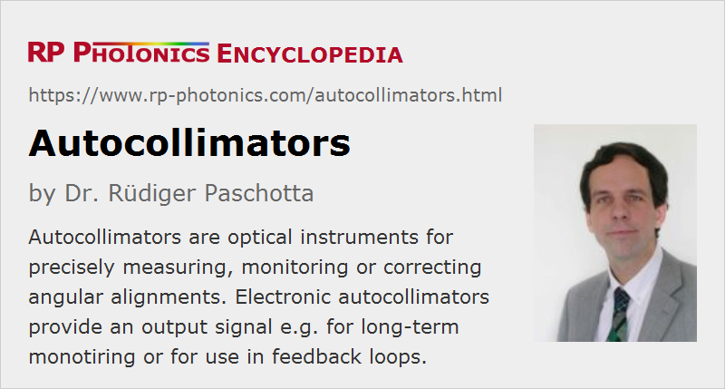

Autocollimators
Definition: optical instruments for precisely measuring angular alignments
More general term: optical metrology instruments
German: Autokollimatoren
Categories: general optics, optical metrology
How to cite the article; suggest additional literature
Author: Dr. Rüdiger Paschotta
The principle of autocollimation, realized with devices called autocollimators, has been used over several centuries for precisely measuring and consequently correcting angular alignments. It belongs to the area of optical metrology.
The basic principle of an autocollimator is quite simple: one directs a collimated beam, which by definition has a small beam divergence, to a flat reflecting object (a mirror) and detects the angular position of the reflected light, which typically needs to be close to direct back-reflection. Often, precise target alignment means that the sent-out beam is exactly reflected back into itself. Its angular position is usually converted into a spatial position by sending the beam through a focusing lens; the position of the resulting focused spot (e.g. on a screen with a fine scale or a position-sensitive detector or a focal plane array) directly reflects the beam angle before the lens. (The position change is approximately twice the focal length of the lens times the angular change in radians.) The same lens (or objective) may be used for collimating the outgoing beam, if the light source produces strongly diverging light. The setup of a simple traditional autocollimator is shown in Figure 1.
Modern autocollimators often contain a laser source, usually a low-power visible diode laser, instead of a traditional light source, because it is then easier to have a bright enough accurately collimated beam over large distances. Some instruments are optimized for a very high angular resolution, e.g. of 1 arcsecond or even better. A laser of safety class I is often sufficient, but sometimes class-II lasers are used.
Note that although a given angular change of the object causes a larger beam displacement at the entrance of the objective if the observation distance is increased, the spot position on the screen is not affected by the observation distance. It is only that the range of detectable angular positions is reduced for large observation distances, where the returning light may no longer enter the objective for too large angles. Some amount of beam divergence can also be tolerated, although it should preferably not lead to any clipping effect in the optical entrance.
Autocollimators should not be confused with autocorrelators, which are something completely different.
Electronic Autocollimators
While traditional instruments use a screen for visual inspection, modern autocollimators often use some kind of electronic detector, e.g. a focal plane array or a photodiode array for measuring the spot position. (Note that the achieved resolution for the spot position can be far better than the pixel spacing of the detector; the resulting angular resolution can be substantially higher than for autocollimators with visual inspection.) The obtained angular position may then be displayed in a digital or analog format, and the resulting digital or analog output signal may also be used for other purposes. For example, it can be used in a feedback loop, also containing an electrically adjustable tilt device, for automatically stabilizing the angular position of the object under test. Instruments with an electronic output are called electronic autocollimators.
Apart from the achieved angular resolution, important performance parameters of electronic autocollimators are the angular range (for a given observation distance) and the acquisition rate. The practical usefulness may be greatly increased with a convenient digital interface (e.g. USB or ethernet) and software with a high-quality user interface, e.g. for displaying, long-term monitoring, storing and otherwise using measurement results on a computer.
Generally, the actual autocollimator is mounted on high quality opto-mechanics for precisely adjusting its position. Depending on the application, different kinds of mounting may be provided, for example on flat surfaces or on optical rails.
Applications of Autocollimators
Autocollimators are applied both inside and outside the area of optics and laser technology; some examples:
- They are often used for precisely checking the angular alignment of optical surfaces – for example, the face parallelism of optical windows, laser crystals or nonlinear crystals.
- Autocollimators can also be useful for the initial alignment of laser resonators. For a linear resonator, one may first ensure that the outgoing beam properly goes through all optical elements and finally allowing the end mirror such that it accurately sends back the beam. The other end mirror may be inserted thereafter.
- Various machine parts, for example in manufacturing, can be precisely aligned with autocollimators.
Suppliers
The RP Photonics Buyer's Guide contains 8 suppliers for autocollimators. Among them:
Questions and Comments from Users
Here you can submit questions and comments. As far as they get accepted by the author, they will appear above this paragraph together with the author’s answer. The author will decide on acceptance based on certain criteria. Essentially, the issue must be of sufficiently broad interest.
Please do not enter personal data here; we would otherwise delete it soon. (See also our privacy declaration.) If you wish to receive personal feedback or consultancy from the author, please contact him e.g. via e-mail.
By submitting the information, you give your consent to the potential publication of your inputs on our website according to our rules. (If you later retract your consent, we will delete those inputs.) As your inputs are first reviewed by the author, they may be published with some delay.
See also: collimated beams, optical metrology
and other articles in the categories general optics, optical metrology
|  |
If you like this page, please share the link with your friends and colleagues, e.g. via social media:
These sharing buttons are implemented in a privacy-friendly way!